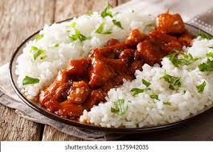

rice and stew

the ghanaian rice and stew recipe
the ghanaian rice and stew recipe is quite an easy and universal dish to prepare
ingredients
- 2 cups of long grain rice
- 1 kg meat, sliced
- 1 cup beef stock
- three tablespoon of tomato paste
- 4 large tomatoes
- 3 beef cubes
- 1 teaspoon of curry powder
- 1/2 cup of gino oil
- 2 medium sized onions
steps